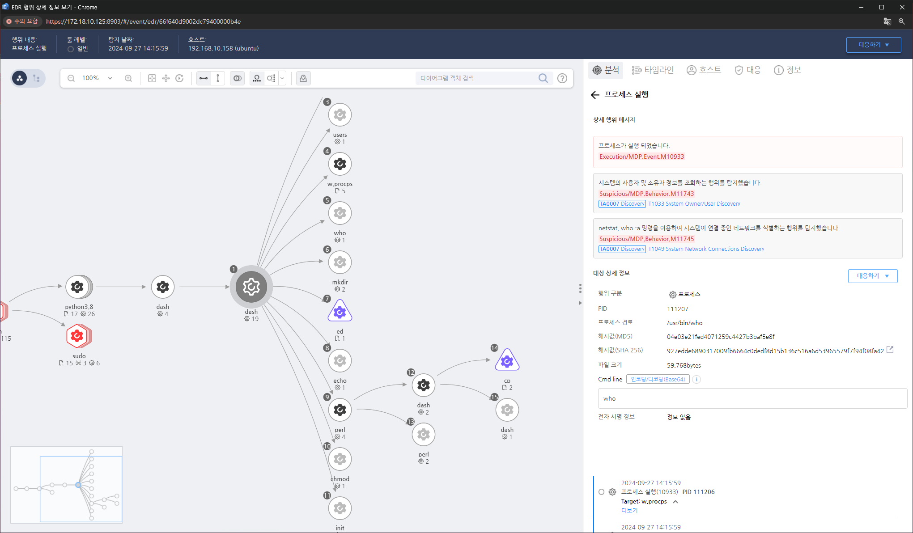

T1036.006.02 파일 이름 끝에 공백
D3FEND
MITRE ATT&CK 액션을 기준으로 대응 방안을 작성
Detection
- Action = File-Create AND
- Target_Path " " AND
- Target_Path "."
Detection(EDR)

Response
- 정확한 파일 경로 확인: 공백이 포함된 파일을 정확하게 찾아 경로를 식별하고, 이 파일의 동작 및 연관 프로세스를 조사해야 합니다.
- 파일 해시 생성 및 검색: 의심스러운 파일의 해시 값을 생성하고, 이를 기반으로 기업 내 다른 시스템에서 동일한 파일이 존재하는지 검색합니다. 해당 해시 값을 악성코드 데이터베이스에 조회하여 이미 알려진 위협인지 확인합니다.
- 파일 생성 및 수정 로그 확인: SIEM 도구나 시스템 로그를 통해 해당 파일이 언제, 어떤 프로세스에 의해 생성되었는지 확인합니다. 파일 생성 또는 수정 시점에 다른 의심스러운 활동이 있었는지 조사합니다.
- 계정 활동 확인: 공백이 포함된 파일 생성과 연관된 사용자 계정이나 프로세스의 활동을 조사합니다. 해당 계정이 침해되었을 가능성을 염두에 두고, 비정상적인 활동을 확인합니다.
Mitigations
파일 이름 유효성 검사
- 시스템에서 허용되는 파일 이름의 규칙을 엄격하게 정의하여, 파일 이름 끝에 공백이 포함된 파일을 생성하거나 실행하지 못하도록 합니다.
파일시스템 모니터링 및 탐지 도구 사용
- SIEM 및 기타 무결성 검사 도구를 이용하여 파일 생성과 관련된 이벤트를 모니터링 합니다.
권한 관리
- 공백이 포함된 파일을 생성할 수 없도록 사용자 혹은 중요한 폴더에 권한을 설정합니다.
로그 및 이벤트 관리
- 파일 이름 변조와 관련된 로그를 실시간으로 수집하고 분석하여, 의심스러운 파일이 생성될 경우 이를 빠르게 감지합니다.
Affected Techniques
Action 실행시 함께 영향을 받는 다른 Techniqes
| D3FEND |
| D3-FIM File Integrity Monitoring |